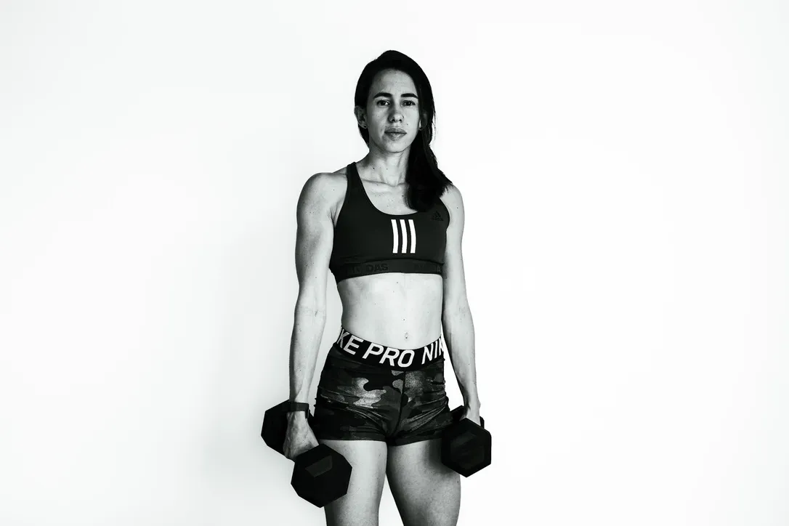
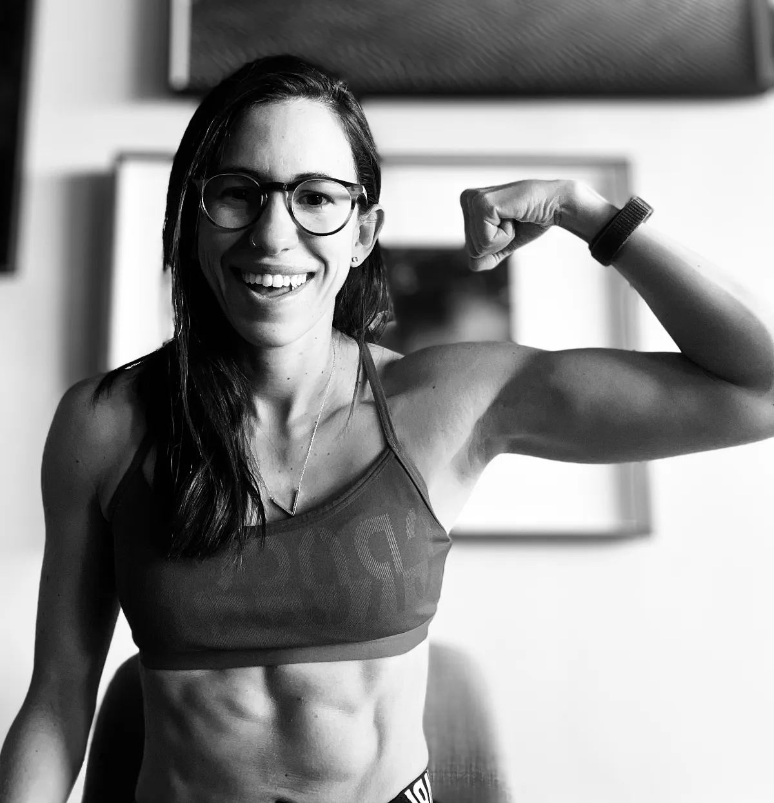
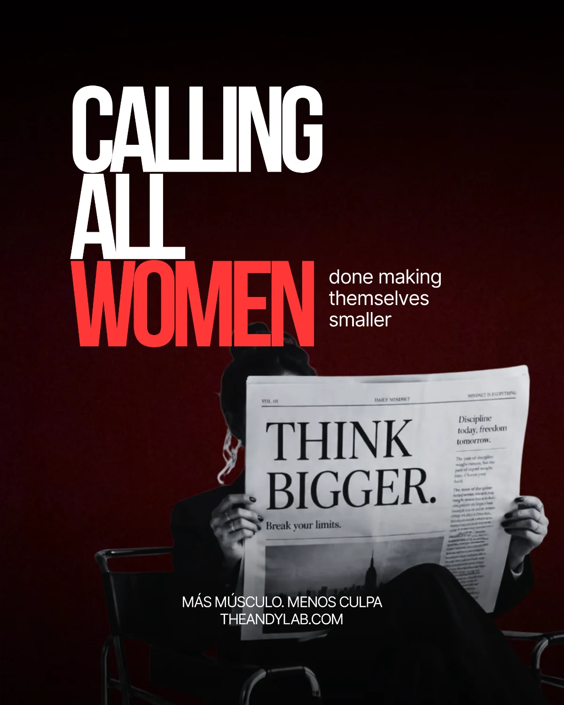
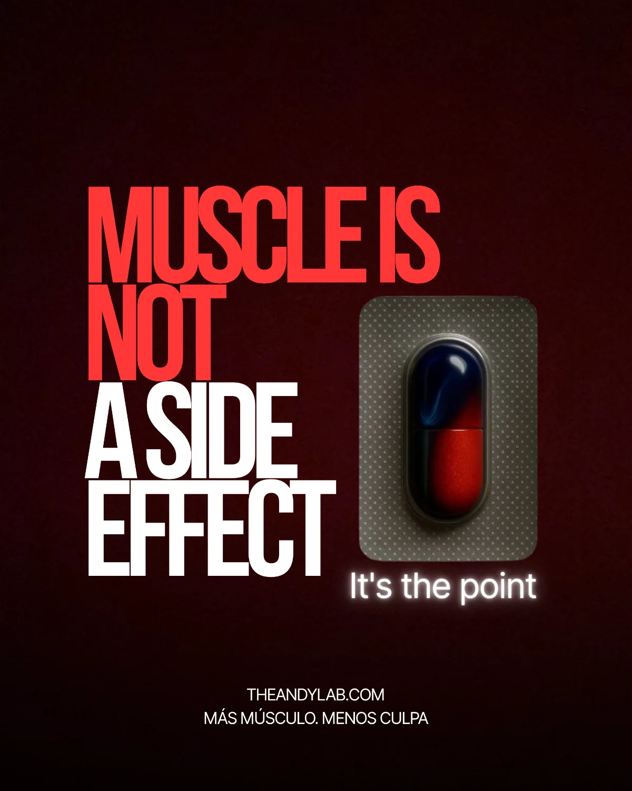
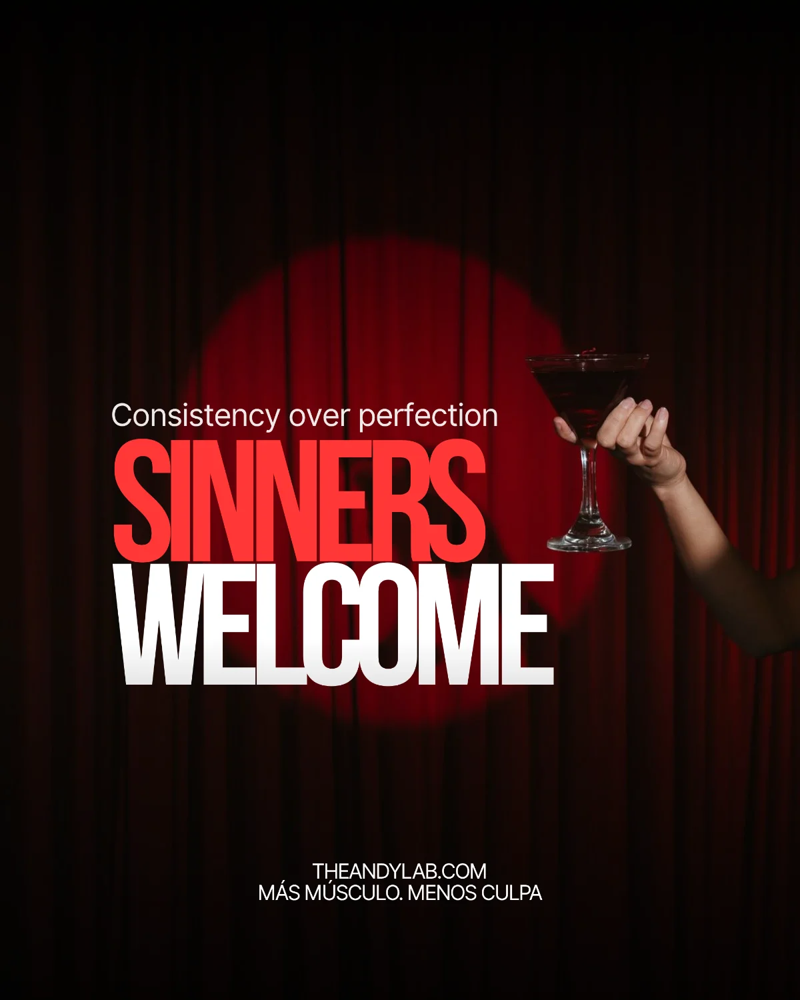

Salí corriendo de mi primer gym. Hoy ayudo a mujeres a quedarse.
I ran out of my first gym. Today I help women stay.
Siempre fui deportista, pero nunca fui de gym. La primera vez que asomé la cabeza en uno, salí corriendo. Máquinas ocupadas por hombres enormes, mujeres en zumba. Me sentía incómoda, y me fui.
I was always athletic, but never a gym person. The first time I poked my head into one, I ran out. Machines taken by enormous men, women in Zumba. I felt out of place, and I left.
Jugué baloncesto en Colombia y en Francia. En Suiza encontré el crossfit, la calistenia y el weightlifting, y se despertó un deseo casi frenético de ser fuerte. Luego vino Sudáfrica: seis años que me cambiaron la vida, y un crossfit muy serio. Yo, descendiente de indígenas y españoles, vengo en empaque pequeño. Decidí que necesitaba algo donde yo tuviera más poder de decisión.
I played basketball in Colombia and France. In Switzerland I found CrossFit, calisthenics and weightlifting, and an almost frantic desire to be strong woke up. Then came South Africa: six years that changed my life, and a very serious CrossFit scene. Me, descended from indigenous people and Spaniards, I come in a small package. I decided I needed something where I had more say.

Le di otra oportunidad al gym. Empecé a estudiar, a probar, a equivocarme, a entender cómo funcionaba mi cuerpo. Biomecánica, nutrición, curso tras curso tras curso. Entrené con una exbodybuilder sudafricana y llegué a un 16% de grasa corporal. Se me veían todos los músculos y vivía de mal genio. Lo hice para probarme que podía. No es la vida que me interesa.
I gave the gym another chance. I started studying, testing, getting it wrong, understanding how my body worked. Biomechanics, nutrition, course after course after course. I trained with a South African ex-bodybuilder and got down to 16% body fat. You could see every muscle and I was in a bad mood all the time. I did it to prove I could. It’s not the life I want.
Soy economista. Shocking, I know.
I’m an economist. Shocking, I know.
Pasé años aprendiendo cómo se supone que decidimos: de forma racional, lógica, óptima. Hasta que llegué a la economía del comportamiento, la parte que admite que no funcionamos como hojas de Excel. Ahí se conectaron mis dos mundos. Si decidiéramos racionalmente, todas comeríamos perfecto y entrenaríamos porque “es bueno”. Pero no somos robots.
I spent years learning how we’re supposed to decide: rationally, logically, optimally. Until I reached behavioural economics, the part that admits we don’t work like spreadsheets. That’s where my two worlds connected. If we decided rationally, we’d all eat perfectly and train because “it’s good for you”. But we’re not robots.
Entrenar fuerza no es solo mover peso. Es cambiar tu comportamiento.
Strength training is more than moving weight. It’s changing your behaviour.
Comer suficiente proteína no es fuerza de voluntad. Es diseño de tu entorno.
Eating enough protein takes no willpower. It takes designing your environment.
Ser constante no es “quererlo más”. Es entender tus sesgos y trabajar con ellos.
Consistency has nothing to do with “wanting it more”. It’s understanding your biases and working with them.
De 9 a 5 trabajo en proyectos de malnutrición en África y Asia. De 5 en adelante, ayudo a mujeres a entrenar, alimentarse mejor y recuperar el control de su cuerpo desde la ciencia y la simplicidad. Vivo en España. Vuelvo a Colombia una vez al año, con suerte.
From 9 to 5 I work on malnutrition projects in Africa and Asia. From 5 onwards, I help women train, eat better and take back control of their bodies through science and simplicity. I live in Spain. I go back to Colombia once a year, if I’m lucky.
Como economista, no puedo evitarlo: todo es ROI. Pocas cosas rinden tanto como entrenar fuerza, comer bien y construir hábitos que puedas mantener. Es la inversión con el mejor interés compuesto que existe.
As an economist, I can’t help it: everything is ROI. Few things pay back like strength training, eating well and building habits you can keep. It’s the investment with the best compound interest there is.

Muchas absorbimos esas reglas antes de poder cuestionarlas, y todavía influyen en cuánto peso ponemos en la barra. Este proyecto es todo lo contrario.
Many of us absorbed those rules before we could question them, and they still shape how much weight we put on the bar. This project is everything opposite.
Más músculo. Menos culpa.More muscle. Less guilt.Años comiendo menos, escondida en la clase grupal, esperando a que se desocupe la zona de pesas, diciendo que sí cuando quieres decir que no. Aquí se ocupa espacio. En el gym, en la mesa y en la sala de reuniones.
You've spent years hiding — eating less, stuck in group classes, waiting for the weights area to empty, saying yes when you meant no. Here you take up space. In the gym, at the table, in the boardroom.

El músculo no llega de rebote mientras persigues otra cosa. Se busca, se planea y se construye a propósito. Tonificar es una palabra de revista. Aquí se entrena fuerza para no depender de nadie a los 70. Tampoco ahora. Fuerte, capaz y libre, dentro del gym y fuera de él.
Muscle doesn't come as a side effect while chasing something else. You search for it, plan it and build it on purpose. Toning is a magazine word. Here we train for strength so you don't need anyone at 70. Not now either. Strong, capable and free — inside the gym and out.

Perfección es una palabra que aquí no se usa. Motivación y disciplina tampoco, porque se acaban un martes cualquiera. Lo que queda es entender cómo decide tu cerebro, para que la culpa pierda su sitio y armes un sistema a tu medida. Aquí las pecadoras son bienvenidas.
Perfection is a word we don't use here. Motivation and discipline either, because they disappear any Tuesday. What's left is understanding how your brain decides, so guilt loses its place and you build a system that fits you. Here sinners are welcome.
